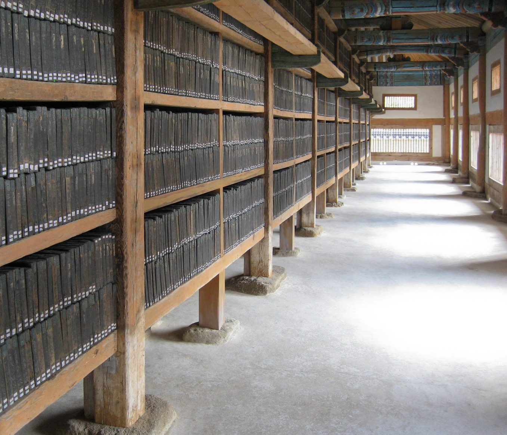
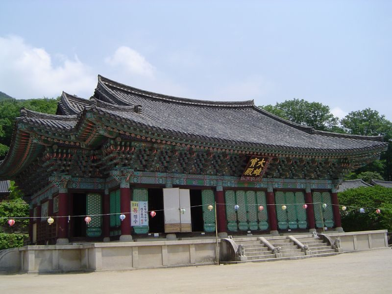
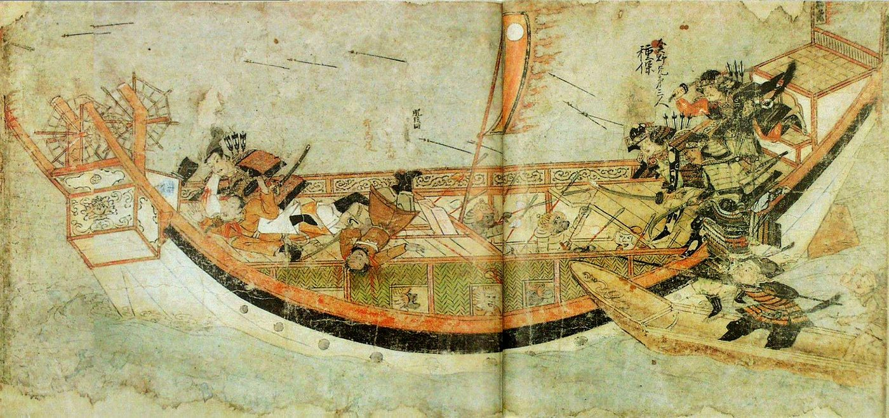
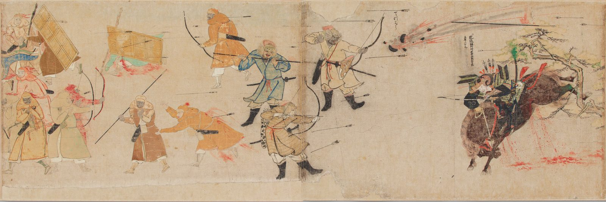

Claiming Heaven’s favor
“Heaven has abandoned China owing to its haughtiness and extravagant luxury.”
Letter, Bretschneider p.37 · Reader PDF p.2. Reader

The Tripitaka Koreana is a collection of Buddhist scriptures carved onto wooden printing blocks. Ink applied to the carved surface produces pages on paper.
Ebrey p.176 dates the carving to 1237–1251; UNESCO’s World Heritage description gives 1237–1248. Both place it during the Mongol invasions. Haeinsa is the collection’s present home; its current storage halls were built later. Locate Haeinsa, Ganghwa and Guju on the map.
Temujin became Chinggis Khan in 1206. “Genghis Khan” is another English spelling. His achievement was political as well as military: rival groups became a larger army and governing order.

Pastoral nomads move herds between grazing grounds. Steppe societies also traded, fought and negotiated with agricultural states. The Mongols inherited this long history; horses alone do not explain their new scale of conquest.
Taking a walled city required different skills from winning a cavalry battle. Governing its population required still others. Campaigns against Japan, Vietnam and Java also show the limits of Mongol success.
Wen and wu: wén means civil or cultural accomplishment; wǔ means martial power. The letter to Changchun shows a conqueror seeking authority and expertise beyond warfare.
Changchun, also known as Qiu Chuji, was a Daoist religious teacher. The letter asks him to travel to the khan. It presents the conqueror as simple, chosen by Heaven and in need of wise assistance.
“Heaven has abandoned China owing to its haughtiness and extravagant luxury.”
Letter, Bretschneider p.37 · Reader PDF p.2. Reader
“To cross a river we make boats and rudders. Likewise we invite sage men, and choose out assistants for keeping the empire in good order.”
Letter, Bretschneider p.38 · Reader PDF p.3. Reader
These are claims made in a Chinese-language letter issued in Chinggis’s name. They show how he sought to persuade a religious authority. They do not by themselves establish how he treated conquered people.
E. Bretschneider, Mediæval Researches from Eastern Asiatic Sources, vol. I (1888), pp.37–39. Bretschneider suggests a Chinese adviser composed the wording, but his proposed identification of the writer is uncertain.
Voices of the Past: reading of the letter · 5:37. A modern performance of the source. The excerpts above and the Reader PDF provide the written version.
Morgan is a modern historian evaluating accounts of conquest. Reports of mass death are evidence, but their numbers need to be tested against population, genre and the writer’s situation.
“not as statistical information but as evidence of the state of mind”
Morgan p.78 · Reader PDF p.10. Reader
Killing, enslavement and forced relocation destroyed communities. An implausible total does not make the catastrophe imaginary.
A qanat is an underground channel that brings groundwater to farmland. It requires continual maintenance. The loss or displacement of farming communities could damage agriculture for generations.
Morgan also stresses variation: some places escaped destruction or later prospered. Neither universal ruin nor universal prosperity describes the whole empire.
Chang’an attracted foreign residents, merchants and religious communities. Buddhism, goods and artistic forms crossed Eurasia long before Mongol conquest.
A larger imperial network supported movement by merchants, envoys and specialists. Some traveled for opportunity; others were taken by force.
Pax Mongolica means “Mongol peace.” The phrase describes conditions that facilitated exchange; it cannot describe every community’s experience of conquest.

The king remained, but the Choe military family controlled the government. Moving the court protected the ruling group while mainland communities bore repeated attacks. Resistance could defend the dynasty and impose severe costs on its people.
The explanation on SKT p.201 is the modern editors’ introduction. The following Guju narrative is a translated passage from the Goryeosa, the later history of Goryeo.
Bak Seo commanded the defense of Guju in 1231. The account describes defenders answering successive siege methods with repairs and countermeasures.
“chained iron links across the holes and repaired them”
Goryeosa excerpt, SKT p.203 · Reader PDF p.17. Reader
Bak Seo keeps resisting. Local military success gives him a reason to continue.
The king orders surrender. The commander’s duty to defend the town now conflicts with obedience to his ruler.
“seriously violating the king’s orders”
Goryeosa excerpt, SKT p.203 · Reader PDF p.17. Reader
Bak Seo finally yields to the order. The town’s defense and the state’s diplomatic settlement operate at different scales. This is a later historical account of the siege, not a transcript recorded at the walls.
Peace in 1259 and the court’s return to the mainland in 1270 lead to a subordinate relationship. Goryeo keeps its royal dynasty, unlike the defeated Southern Song.
Royal marriages tie Goryeo to the Mongol ruling house. Its rulers supply resources and ships for campaigns against Japan, while Mongol influence shapes aristocratic life.
Conquest did not produce one political arrangement everywhere. Goryeo’s surviving dynasty was compatible with dependence on the Mongol empire.
Goryeo paid for the Mongol campaigns against Japan in grain, timber, and labor. Wongam Chungji, abbot of Suseonsa (today’s Songgwangsa), wrote poems about that cost while the Yuan prepared its fleets on Goryeo’s southern coast.

The situation of suffering and hardship in Yeongnam
Though I must describe it, tears come first
Military rations come from two provinces
Battle ships are built from three mountains
Taxes are a hundred times higher than before
Corvee labor lasts three years
Conscription as sudden and urgent as shooting stars
Orders come down like thunderbolts
Envoys come and go ceaselessly
Generals line up endlessly
All forearms are bound
no one’s back remains unscathed
Sending and receiving has become routine
transportation continues day and night without a break
Neither cows nor horses have their backbones intact
people’s shoulders have no rest
Before dawn they go out to dig arrowroot
Under the moon they come home with cut thatch
Farmers are driven from their fields to serve as sailors
Boatmen are rounded up along the whole coast
Drafted men put on armor and helmets
The strongest are chosen to shoulder spears
They are hurried off the moment they are called
Not an instant’s delay is allowed
Wives and children wail and fall to the ground
Fathers and mothers weep and cry out to heaven
They count themselves already parted, the living from the dead
Who can hope to come home alive?
Only the old and the very young are left
Scraping by, still burning with worry
In every town half the households have fled
In every village the fields lie in ruin
What house is not stripped bare?
What place is not in turmoil?
Official taxes cannot be escaped
How could the army levy be lightened?
The wounds grow worse each day
How can the worn-out and the sick recover?
Everything one touches is cause for grief
Life itself is truly pitiable
We know we cannot hold out
But what can we do with no one to appeal to?
The emperor’s virtue covers us like the blue sky
His brilliance hangs like the bright sun
If we simple people wait a little longer
The sage’s grace will surely reach us
Soon we shall see, throughout the Three Han
Every household sleeping in peace
Wongam Chungji, 圓鑑國師歌頌, Hanguk bulgyo jeonseo 6:379a–b. English begins from the lecture Buddhist Literature in Korea, week 4, lesson 3; the remaining lines are translated for this class.

Farming must be done on time; missing the moment means losing the chance
A short window for planting exists between spring and summer
Spring is over and summer has begun
The farming cannot wait
Heaven above knows the season
And sends its rich rain again and again
With the urgent need to conquer the east, who has time to think about farming?
Envoys constantly ride east and west without stopping
People are driven out, villages are empty, and they are mercilessly chased to distant coastlines
Felling trees day and night to build warships exhausts one completely
If not an inch of land is plowed, how will the people survive?
The people’s cupboards absent of grain, most of us cry with hunger from morning on
And more, all our farming has now come to ruin, each of us aware of our impending doom
Ah, what kind of person am I? I can only shed tears and cry
Alas for the people of this eastern land
Can Heaven above not grieve?
If only a long wind would come
And carry off these words I weep in blood
One gust up to heaven
To lay them open before the white jade steps
And whatever my words have left unsaid
Let the Lord on High know all of it
Wongam Chungji, 圓鑑國師歌頌, Hanguk bulgyo jeonseo 6:380b. English begins from the lecture Buddhist Literature in Korea, week 4, lesson 3; the remaining lines are translated for this class.

The Emperor rules all under heaven
His divine work surpasses the sage-king Yao
His virtue embraces everything within the bounds
His grace spreads without limit
Carts run on one axle width over a thousand roads
Writing is one script across the nine regions
Only the vile island barbarians remain
Clinging to life like fish in a cauldron
Trusting only in the sea between us
They scheme to keep their territory apart
They have never sent their tribute of bundled reeds
Nor are they heard of when the jade tallies are presented
Then the Emperor flared in anger
And in due time commanded our king
A thousand dragon-and-magpie warships
A hundred thousand tiger and leopard troops
To call the plains of Fusang to account
The army rises on the shore at Happo
War drums shake the vast sea
Banners brush the long clouds
Bold generals all rush toward death
Heroes compete to win merit
At the river they think of Han Xin’s stand with his back to the water
Their boats they would burn like Meng Ming
Why should binding the king of Yue alone be praised?
Pacifying Wu is not worth mentioning
They will smash the enemy camps in an instant
And report the victory between dawn and dusk
Then jade and silk will be offered in tribute
Spears and shields laid down, all strife resolved
The commander will receive jade tablets and wine vessels
The soldiers will go home to plow and weed
The sharp three-foot sword back in its case
The hundred-catty bow in its quiver
Songs of peace rising on every side
Joy and gladness to the eight ends of the earth
The beacon fires will stop warning of the frontier
Dust and wind gone from the far passes
We shall see our sage Son of Heaven
Play the Southern Breeze song for ten thousand years
Wongam Chungji, 圓鑑國師歌頌, Hanguk bulgyo jeonseo 6:379c–380a; also in the Dongmunseon. Translated for this class. Yao: the ancient sage-king (Fangxun). Fusang: Japan. Happo: today’s Masan, where the fleet sailed. Han Xin and Meng Ming: generals who cut off their own retreat. Southern Breeze: the song of the sage-king Shun.
The same abbot wrote all three. The Yeongnam poem ends by trusting the emperor’s grace; the ode cheers the fleet; Pitying the Peasantry asks a long wind to carry his words to heaven. A monk of his rank spoke for his order to the court and the empire.
Chungji also petitioned the Yuan emperor to return land confiscated from Suseonsa, and the land came back. Goryeo’s survival as a dynasty depended on this kind of accommodation.